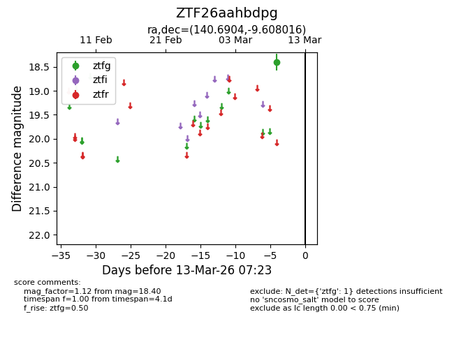
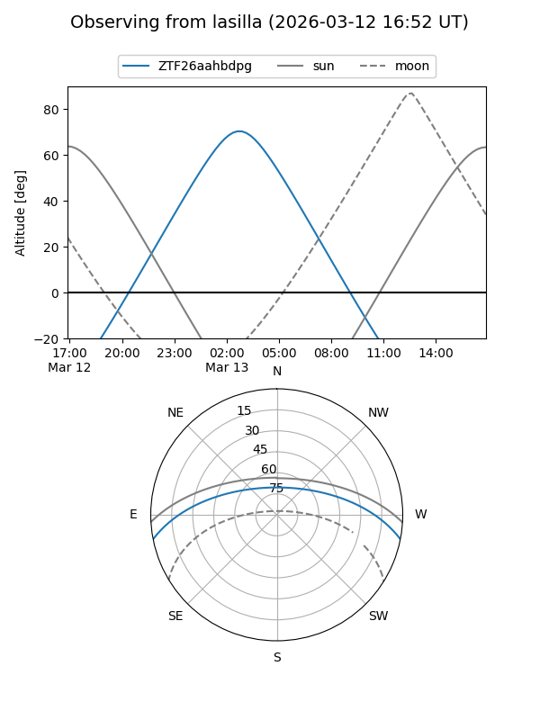
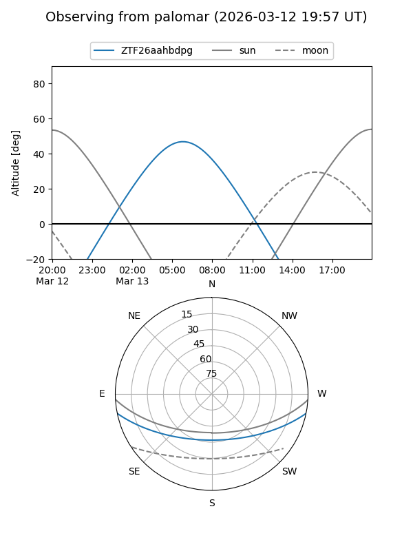

ZTF26aahbdpg
Target ZTF26aahbdpg at 2026-03-13 07:24
Aliases and brokers:
FINK: link
Lasair: link
ALeRCE: link
alt names
ZTF26aahbdpg (ztf,fink_ztf)
Coordinates:
equatorial (ra, dec) = 140.6904,-9.60802
equatorial (HMS+DMS) = 09:22:45.71,-09:36:28.86
galactic (l, b) = (241.5153,+27.52246)
Flags:
Photometry:
last ztfg=18.40
1 ztfg detections
Lightcurve

Visibility


Additional plots